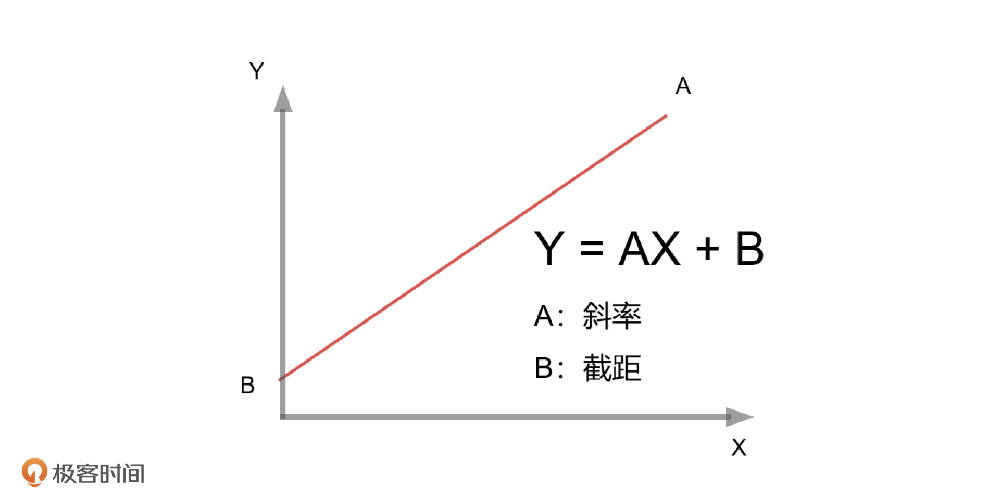
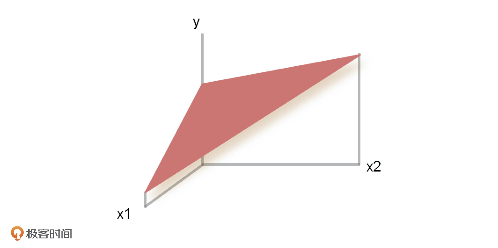
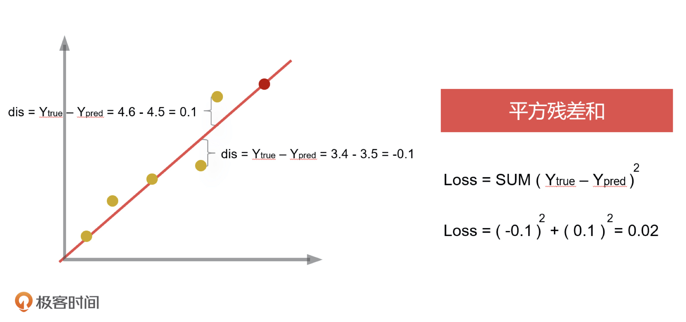
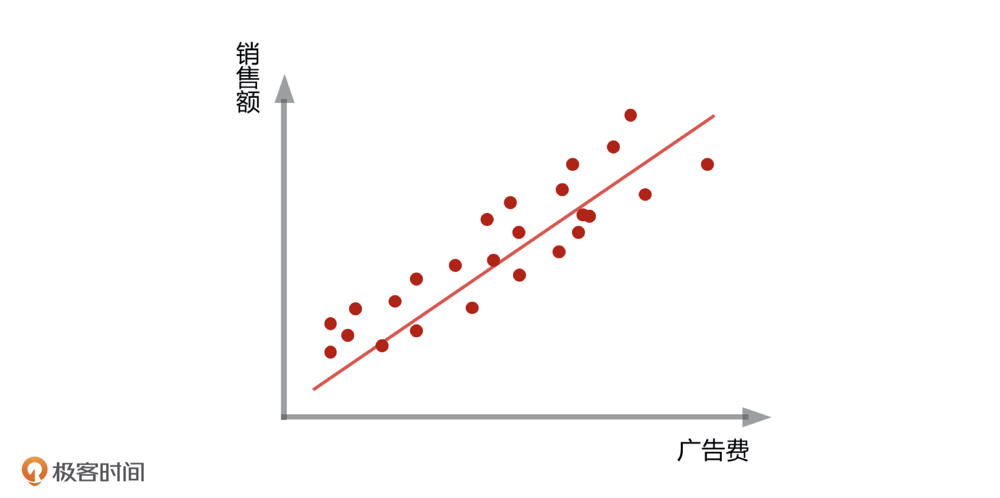

- 00 开篇词 你好，产品经理！你的未来价值壁垒在哪儿？.md.html
- 01 行业视角：产品经理眼中的人工智能.md.html
- 02 个人视角：成为AI产品经理，要先搞定这两个问题.md.html
- 03 技术视角：AI产品经理需要懂的技术全景图.md.html
- 04 过来人讲：成为AI产品经理的两条路径.md.html
- 05 通过一个 AI 产品的落地，掌握产品经理工作全流程.md.html
- 06 AI 模型的构建过程是怎样的？（上）.md.html
- 07 AI模型的构建过程是怎样的（下）.md.html
- 08 算法全景图：AI产品经理必须要懂的算法有哪些？.md.html
- 09 K近邻算法：机器学习入门必学算法.md.html
- 10 线性回归：教你预测，投放多少广告带来的收益最大.md.html
- 11 逻辑回归：如何预测用户是否会购买商品？.md.html
- 12 朴素贝叶斯：让AI告诉你，航班延误险该不该买？.md.html
- 13 决策树与随机森林：如何预测用户会不会违约？.md.html
- 14 支持向量机：怎么预测股票市场的涨与跌？.md.html
- 15 K-means 聚类算法：如何挖掘高价值用户？.md.html
- 16 深度学习：当今最火的机器学习技术，你一定要知道.md.html
- 17 模型评估：从一个失控的项目看优秀的产品经理如何评估AI模型？.md.html
- 18 核心技能：产品经理评估模型需要关注哪些指标？.md.html
- 19 模型性能评估（一）：从信用评分产品看什么是混淆矩阵？.md.html
- 20 模型性能评估（二）：从信用评分产品看什么是KS、AUC？.md.html
- 21 模型性能评估（三）：从股价预测产品看回归算法常用的评估指标.md.html
- 22 模型稳定性评估：如何用PSI来评估信用评分产品的稳定性？.md.html
- 23 模型监控：产品经理如何建设算法模型监控指标体系？.md.html
- 24 推荐类产品（一）：推荐系统产品经理的工作职责与必备技能.md.html
- 25 推荐类产品（二）：从0打造电商个性化推荐系统产品.md.html
- 26 预测类产品（一）：用户复购意向预测的底层逻辑是什么？.md.html
- 27 预测类产品（二）：从0打造一款预测用户复购意向的产品.md.html
- 28 预测类产品（三）：从0打造一款“大白信用评分产品”.md.html
- 29 自然语言处理产品：从0打造一款智能客服产品.md.html
- 30 AI产品经理，你该如何提升自己的价值？.md.html
- 31 AI产品经理面试，这些问题你必须会答！.md.html
- 春节加餐1 用户增长模型：怎么利用AI技术判断新渠道性价比？.md.html
- 春节加餐2 一次答疑，带你回顾模型评估的所有基础概念.md.html
- 期中周测试题 ，你做对了吗？.md.html
- 期中答疑 AI产品经理热门问题答疑合集.md.html
- 结束语 唯一不变的，就是变化本身！.md.html
- 捐赠
10 线性回归：教你预测，投放多少广告带来的收益最大
你好，我是海丰。
上节课，我们讲了分类问题中最基础的 KNN 算法。这节课，我们来讲回归问题中最经典的线性回归（Linear Regression）算法。
我会先结合地铁排队的常见例子，带你理解线性回归算法的原理，再利用它去实现投放广告的收益预测，给你讲清楚它的应用场景。
如何理解线性回归算法？
如果你每天上班坐地铁，肯定碰上过早高峰排队，尤其是在疫情期间，地铁协管员会要求所有人站好队，并且前后间距大约 1 米。尽管队伍中的人没有刻意站成一条直线，但是从队伍外面看过来，它依然是一条直线。
某一天，你突然特别着急地跑到地铁站，因为你起来晚了，赶不上这班地铁就要迟到了，所以你很想一跃而起插入到队伍前面去，但是按照要求，你只能排在队伍的最后面，再和前一个人保持差 1 米的距离。
同样地，其他新来的人要上地铁，也一定要排在队尾，再和前一个人间隔1米。这个操作看似很平常，不知道你有没有想过这背后的科学依据呢？
其实，只要你按照我们刚才说的排好了队，就说明你已经成功在你的潜意识里构建了一个模型，去寻找你自己的站位。这个模型就是线性回归的模型，你的站位就是这个模型的解，是一个具体的数值。这个模型中，所有人的站位都分布在一条直线的周围，因此，后来的人也都会自觉地站在这条直线的周围，让它依然是一条直线。
这就是线性回归这个模型背后的逻辑思路，也就是根据已有的数据去寻找一条直线，让它尽可能地接近这些数据，再用这条直线预测新数据的可能结果，这个结果是一个具体的数值。
那这条直线怎么找呢？我们就需要知道线性回归的原理了。
线性回归算法的原理
刚才，我们一直提到“直线”，那你还记得直线的数学公式吗？我们今天会一直用到它，所以我先带你来复习一下。

在这个式子中，我们可以通过一组合适的 A 和 B ，去描述一组对应的事物 X 和 Y 之间的对应关系，然后再用得到的分布来描述未知事物的可能解，这就是线性回归用来做预测的“套路”。
回到刚才排队的例子，如果我们把队伍中每个人的顺序和对应的站位想象成已知信息 X 和 Y，那么我们一定可以找到一组合适的 A 和 B 来描述这条直线，让尽可能多地人站在这条直线上面或者离这条直线非常近。这个时候，我们其实已经找到了这条直线的分布。
最后，我们再用这个已知的分布，其实也就是 A 和 B 的对应关系，代入到新人的顺序信息，就可以求出这个新人应该站在什么位置了。
线性回归算法非常常用，它的原理我们一定要记住，所以我再来讲一个例子来帮助你理解。比如说，我们现在已知一部分人的身高和体重信息，想要通过身高来预测一些新人的体重信息，我们该怎么做呢？
因为大部分人的身高和体重是成正比的，也就是说身高越高，体重越大。所以，我们可以假设体重为 Y，身高为 X，然后通过已知数据找到一组合适的 A 和 B，再把求得的 A 和 B 以及这位新朋友的身高信息 X代入到公式当中，我们就可以求得这个新朋友的体重了。
刚才我们得到的其实都是一元回归方程，因为影响结果Y的其实只有一个影响因素X，那如果有多个影响因素我们该怎么办呢？就比如在预测银行贷款的例子中，贷款人的工资和年龄都会影响贷款额度。这个时候，我们就要构建二元回归方程了，它的分布也不再是一条直线，而是一个较为复杂的平面了，公式是Y=A1X1+A2X2+B。同理，还有多元回归方程。

线性回归算法的原理我们讲完了，但有的同学可能会问，我们怎么保证所有线性分布的数据都落到一条直线上，更准确点来说，就是怎么让每次生成的直线到所有点的距离最小呢？这个时候，我们就需要引入损失函数，来对每次生成的直线进行评估。
如何计算最优解？
在数学中，我们会定义一个距离公式来计算线性回归的预测值和真实值之间的差异，放在我们例子中，就是计算地铁上所有排队人的站位与理想直线站位的误差到底有多大。当然如果每个人站的位置都很好，那所有人的位置距离这条直线的误差之和就会很低，反之就会很大。
这个公式在机器学习中就被称作损失函数，也叫代价函数。损失函数就可以用来评价模型的预测值和真实值之间不一样的程度，损失函数值越小，模型性能越好。而平方残差和（RSS,Residual Sum of Squares）是一种最常见的损失函数，它可以用来计算每一个样本点的结果值和当前函数值之间的平方差，差值越小，回归模型做得就越好。差值的具体计算方式，我们只要了解就可以了，我把相应的图片放在了下面，你可以看一看。

线性回归算法的应用场景
到这里，我们已经明白线性回归算法到底是怎么操作的了。为了把它更好地应用到实际问题中，我再结合一个预测广告的例子，来给你讲讲这个算法到底能用来解决什么问题。
假如，你是京东手机部门的产品经理，现在部门要推出一款明星产品：“京造手机”。领导为了让产品卖得更好，就到处去投放广告，让大家都知道这个产品，激发大家购买的欲望。因为一般来说，广告投放得越多，钱花得越多，知道的人越多，产品卖得越多。
那根据历史累计的广告投放经费和销售额，我们可以画出一张关系图，图上每个点对应的 X 轴代表广告费，Y 轴代表销售额。结合这张图我们可看出，有些坐标点的收益相对较高，有些坐标点的收益相对较低，大概率它们是符合线性关系的。

已知线性回归方程是 Y = AX + B，我们将已有数据代入到这个方程中，然后求得出一组 A和 B 的最优解，最终拟合出一条直线，使得图中每个点到直线的距离最短，也就是我上面说的损失函数最小。这样，我们就能通过这个最优化的 A 和 B 的值，进行估算广告经费和销售额的关系了。
虽然它对于每一个单点来说都不是那么精确，但有了这条线，你只需要设定一个广告费的数额，就一定能计算出一个销售额。这样一来，当你在开部门周会的时候，就可以跟领导汇报：“只要我们投入多少的广告费用，GMV 就能达到我们这个月的指标”。
除此之外，线性回归可以应用在产品采购和生产线的许多阶段。比如，我们经常需要预测某个商品未来的销量，预测库存等等。总之，我们作为产品经理，要善于挖掘各种需求，利用这些算法技术来提高销量。
线性回归算法的优缺点
因为线性回归算法很简单，数学原理很清晰，所以它的运算效率很高。又因为我们最终得到的是一个公式函数，所以根据计算出的公式系统，我们就可以很明确地知道每个变量被影响的大小，所以它具有很强的可解释性。这一点有助于产品经理理解影响模型效果的因素的变化，也有助于我们通过非技术性的语言想领导进行汇报。
但也正是因为线性回归的算法太过于简单，所以预测的精确度相对较低，不相关的特征会对模型的效果好坏有很大的影响，而且在数据量较小的情况下，很容易出现过拟合的问题。因此，在实际工业中，我们会更多地应用非线性回归的方式，比如决策树回归、KNN回归、随机森林回归等，然后通过模型融合得到更为精准的结果。但它们的原理基础都来源于线性回归模型，所以我们一定要掌握好线性回归。
除此之外，线性回归的也有个很明显的缺点，就是不具备求解一个非线性分布的能力。也就是说，如果你的数据不是简单地分布在一条直线周围，那么你用线性回归求解的分布也会误差很大，从而对未知测试数据的评估结果也不准确。对于这个问题，我们会在接下来的课程中介绍更多的方法，你可以先自己想想。
总结
线性回归算法也是机器学习领域中的入门算法，主要用来预测具体的连续性数值。今天，我带你总结了它的核心原理、应用场景以及优缺点。
首先，线性回归的核心原理，就是根据原有数据通过线性回归方程 Y = AX + B，把已有数据代入到这个方程里，求出一组 A 和 B 的最优解，最终拟合出一条直线，然后通过每个数据到直线的距离最短，也就是损失函数最小。这样一来，我们就能通过这个最优化的 A 和 B 的值，估算出新的数据 X 和 Y 的关系，进行数据的预测。
其次，线性回归也可以应用到很多预测具体数值的场景中，比如预测身高、预测销售额、预测房价、预测库存等等，但前提是这些场景中的数据是符合线性分布的。
最后，线性回归的优点可以总结为三点，简单易实现，运算效率高，可解释性很强。缺点主要有一点，就是预测的准确度比较低。因此，我们在实际工作中，会更多地应用非线性回归的方式。
课后讨论
假设，你们公司正在向市场推出一种新产品，但还没确定以什么价格进行销售，你能利用今天学习的线性回归，设计出一个实现方案吗？
如果你已经有思路了，可以直接在留言区写下你的答案，如果还是没思路，你可以参考我下面给出的提示：
- 预先选择几个价格点，分别对测试客户做市场调研，得到销售额与用户的反馈；
- 使用线性回归推断价格和销售额之间的关系，从而确定销售产品的最佳价格点。
实践方案设计好后，你觉得在具体的落地实践上还有什么需要考虑的吗？欢迎在评论区分享你的观点，如果你的朋友正在为预测类问题而苦恼，也欢迎你把这节课分享给他。我们下节课见！
© 2019 - 2023 Liangliang Lee. Powered by gin and hexo-theme-book.